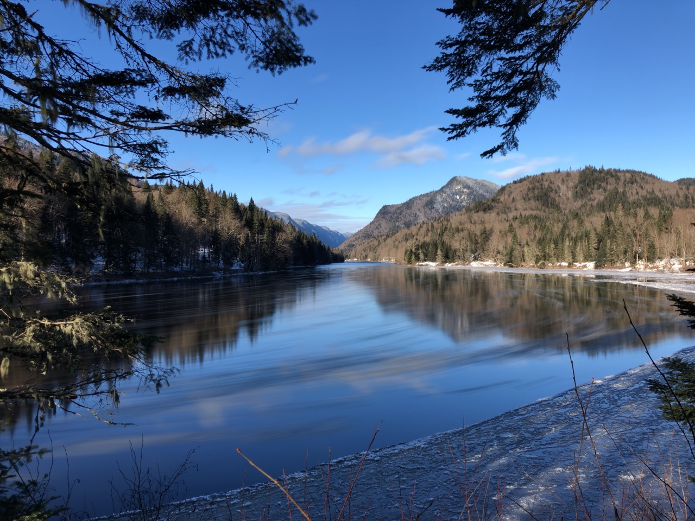
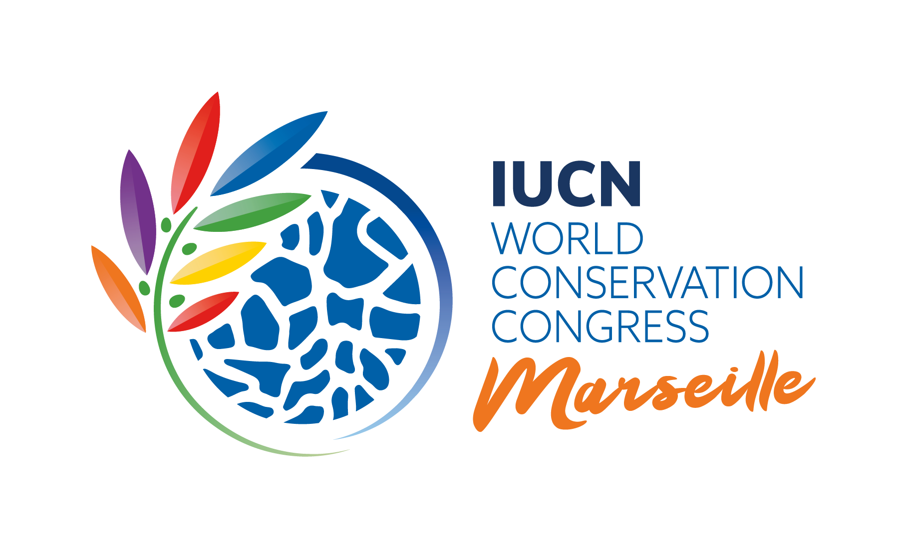

<!DOCTYPE html>
<html lang="en">
<head>
    <meta charset="UTF-8">
    <meta name="viewport" content="width=device-width, initial-scale=1.0">
    <title>Websites about Protected Areas Issues</title>
    <!-- Created by Al Helal Shourav Student ID: 301387518 -->
    <style>
        body {
            margin: 0;
            font-family: Verdana, Geneva, Tahoma, sans-serif, sans-serif;
        }

        header {
            background-color: skyblue; /* Whole page background color */
            color: black;
            padding: 10px;
            text-align: center;
        }

        img {
            width: 100%;
            max-width: 600px;
            height: 300px;
            object-fit: cover;
            border-radius: 0;
        }
    </style>
</head>
<body>

</body>
</html>


<header>
    
    <main>
        <h3>Websites about Protected Areas Issues</h3>
    <!--Introductory Paragraph and importance-->

    <p><i>Protected areas, encompassing national parks, wildlife reserves, and other conservation zones, play a pivotal role in safeguarding our planet's biodiversity and natural heritage. In today's world, the escalating threats of habitat destruction, climate change, and human activities underscore the critical importance of addressing issues related to protected areas. These designated zones serve as havens for diverse ecosystems, rare species, and delicate ecosystems, providing essential habitats for flora and fauna to thrive. The preservation of these areas is not merely a conservation effort but also a strategic response to the global ecological crisis. Recognizing the delicate balance between human development and environmental sustainability, understanding and addressing issues within protected areas have become imperative for fostering a harmonious coexistence between humanity and the natural world. As we navigate the complexities of the 21st century, the significance of these protected areas reverberates as a beacon of hope for the preservation of biodiversity and the maintenance of ecological equilibrium.</p></i>
    
    <div style="padding-bottom: 10px;"<h4>Websites related to Protected Area Issues:</h4></div>

    <nav> <!--Bulleted list of 6 hyperlinks-->
    <ul style="list-style-type: none;">
     <div style="padding-bottom: 10px;"><li><a href="https://www.iucn.org/" target="_blank">International Union for Conservation of Nature</a></li></div>
       <div style="padding-bottom: 10px;">  <li><a href="https://www.worldwildlife.org/" target="_blank"> World Wildlife Fund</a></li></div>
         <div style="padding-bottom: 10px;">  <li><a href="https://www.unep.org/" target="_blank">United Nations Environment Programme (UNEP)</a></li></div>
          <div style="padding-bottom: 10px;"> <li><a href="https://www.nationalgeographic.com/environment/" target="_blank">National Geographic - Environment</a></li></div>
            <div style="padding-bottom: 10px;"> <li><a href="https://www.conservation.org/" target="_blank">Conservation International</a></li></div>
                <div style="padding-bottom: 10px;">  <li><a href="https://www.nature.org/" target="_blank">The Nature Conservancy</a></li></div>
                </nav>
                
<p><hr><h5>What role does IUCN play to protect areas?</h5></p>
<p>
     The International Union for Conservation of Nature (IUCN) plays a crucial role in protecting areas by employing a comprehensive approach to conservation. IUCN focuses on assessing the status of biodiversity, identifying key conservation priorities, and implementing effective management strategies. Through its vast network of experts, scientists, and conservation practitioners, IUCN conducts rigorous research and provides valuable insights to inform conservation policies and practices. The organization collaborates with governments, non-governmental organizations (NGOs), local communities, and other stakeholders to develop and implement sustainable management plans for protected areas. IUCN's efforts extend beyond individual sites to address broader challenges such as habitat degradation, climate change, and human-wildlife conflict. By advocating for sound policies, promoting scientific research, and fostering global collaboration, IUCN contributes significantly to the preservation of natural habitats and the biodiversity they harbor.</p>
    
<footer>
    <p>&copy; Al Helal Shourav, Student ID:301387518, Course: COMP213 SEC: 08 </p>
    <ul style="list-style-type: none;">
    <p><li>&copy;<a href="https://https://www.iucn.org//" target="_blank"> Credits: International Union for Conservation of Nature (IUCN)ALL RIGHTS RESERVED</a></li></p></ul>
</footer>
</main>
    
</body>
</html>